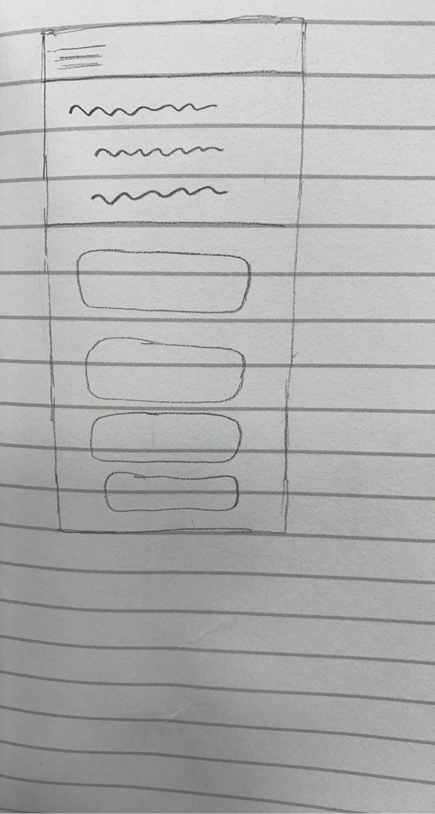
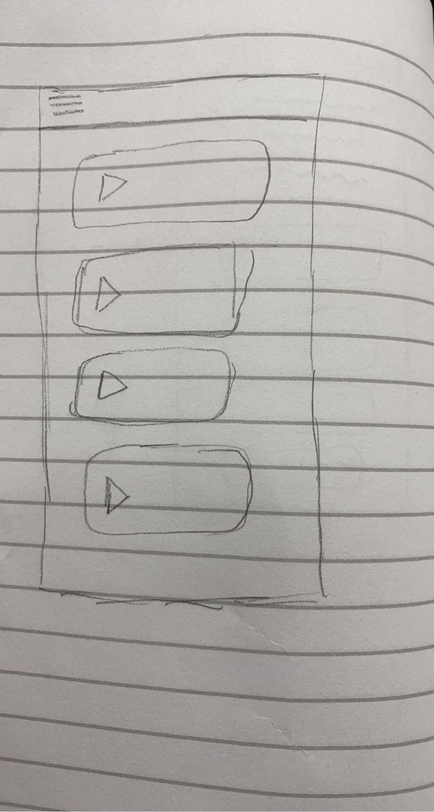
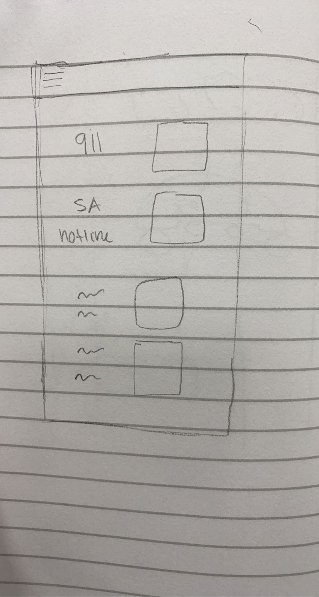
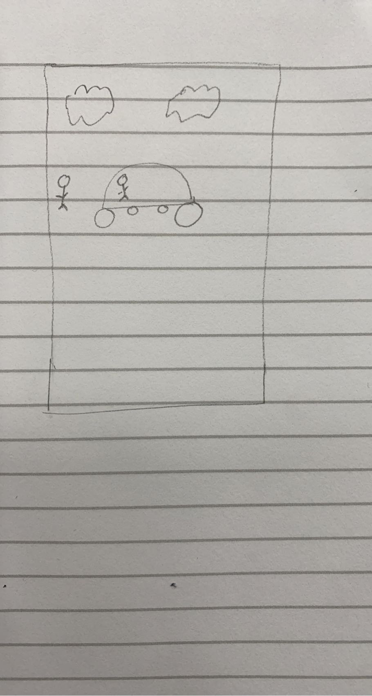

In this image, I am trying to show a girl in an uber who feels uncomfortable.
In this image, I am trying to show that the girl navigates to our sexual violence prevention app.
In this image, I am trying to show that if the user clikced on recordings, she can navigate to the recordings page and play one of the recordings of a man saying he expects her to be dropped off in 5 minutes so that the uber driver knows someone is waiting for her.
In this image, I am trying to show in more urgent situations, the user can navigate to the hotline page and call an emergency number.
In this image, I am trying to convey that the girl was successfully safely dropped off by the uber.
I have never made a stroyboard before so the first thing I learned from this assignment was how to make a storyboard. When I was creating my storoboards, I was worried that I didn't have much of my designs finalized and just had simple sketches. I learned that storyboards have less to do with the design of your product but more with the situation and the motivations behind the user's actions in regards to your product.